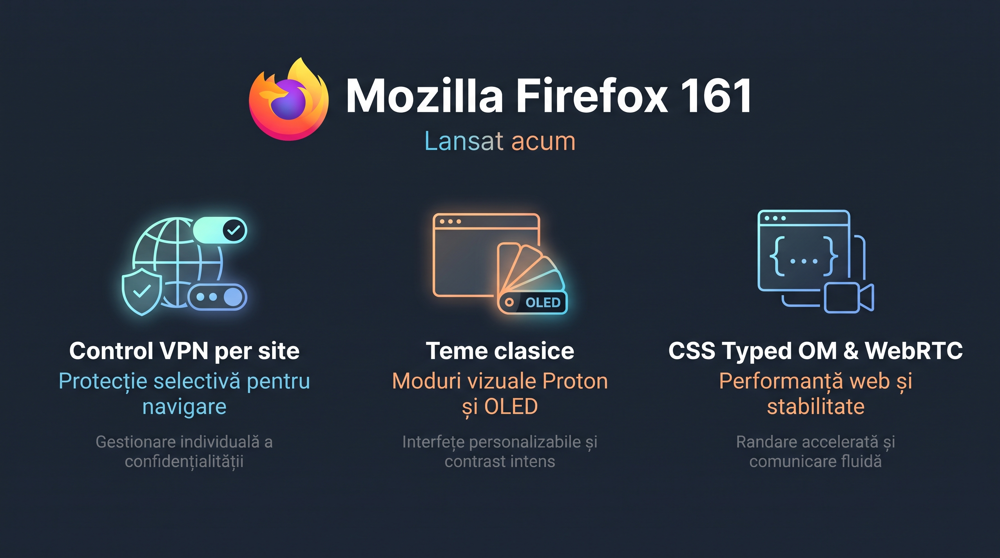

Mozilla Firefox 161 a fost lansat: Control VPN per site, teme clasice (Proton și OLED), CSS Typed Object Model și remedieri WebRTC

Mozilla a lansat Firefox 161, cea mai nouă versiune majoră a browserului său open-source. Actualizarea introduce control granular pentru conexiunea VPN integrată la nivel de domeniu individual, readuce temele clasice în managerul de extensii, îmbunătățește importul istoricului din Chrome și adaugă funcții moderne pentru dezvoltatorii web.
1. Control VPN per site, teme clasice și productivitate
Setări VPN individuale per site: Utilizatorii pot activa sau dezactiva funcția VPN integrată a Firefox pentru site-uri individuale, în loc să aplice aceeași regulă globală pentru întregul trafic de navigare.
Secțiunea Classic themes în Add-ons Manager: Pagina Themes include acum o secțiune dedicată temelor clasice, care reunește tema Proton din versiunile anterioare ale Firefox, o temă Firefox OLED și mai multe variante monocrome.
Scurtătură pentru copierea URL-ului și import mai inteligent din Chrome:
Utilizatorii pot configura o combinație de taste personalizată (neasignată implicit) în secțiunea Customize keyboard shortcuts din Settings pentru a copia rapid adresa URL a filei curente;
La importul istoricului de navigare din Google Chrome, Firefox păstrează acum frecvența vizitelor, oferind prioritate mai mare site-urilor accesate frecvent în sugestiile din bara de adrese și în scurtături.
2. Platforme web (CSS random(), Typed OM) și remedieri desktop/mobil
Noutăți pentru dezvoltatorii web: Firefox 161 introduce suport pentru funcția CSS
random()(care permite generarea de valori aleatorii în intervale specificate direct în foile de stil) și implementează CSS Typed Object Model, permițând codului JavaScript să manipuleze valorile CSS ca obiecte tipizate în loc de șiruri de caractere (suportul pentru valorile de culoare nu este încă disponibil).Corecții WebRTC și restaurarea sesiunilor: Remediază o problemă introdusă în Firefox 158 care determina anumite servicii WebRTC să transmită fluxuri video H.264 la o rezoluție redusă, precum și o eroare la restaurarea sesiunii în care filele puteau dispărea după repornirea browserului dacă făceau referire la un grup de file (tab group) inexistent.
Îmbunătățiri specifice pe platforme:
Windows și macOS: Corectează o eroare pe Windows în care bara de activități (taskbar) rămânea vizibilă peste ferestrele Firefox aflate în modul full-screen, precum și un blocaj pe macOS 26 sau ulterior la deschiderea Spotlight cu o colecție mare de marcaje (bookmarks);
Android: Îmbunătățește performanța randării efectului
backdrop-filterpe anumite dispozitive, elimină limita numărului de scurtături de pe pagina de pornire și ajustează scurtăturile implicite pentru a face loc site-urilor vizitate frecvent.
Disponibilitate: Binarele Firefox 161 sunt disponibile pe serverele de descărcare Mozilla, urmând să ajungă în zilele următoare prin actualizări OTA pe Windows și macOS și în depozitele distribuțiilor Linux.